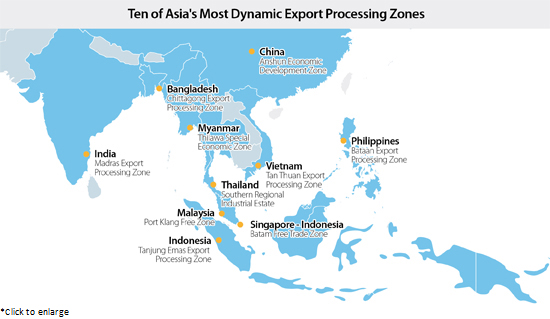
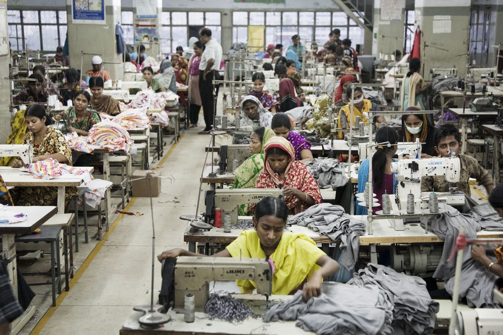

Labour Law and Globalization

|
The creation of export processing zones (EPZs) is supposed to bring benefits to a country by creating new jobs and transferring new skills and expertise.
In reality, however, they have earned criticisms from human rights groups which claim that these factories only offer unacceptable and/or dangerous workplaces, often time to keep costs low and competitive.
|
|

These dangerous or unacceptable conditions are known as sweatshops. The main contributor to the existence of sweatshops inside EPZs is oftentimes their exemption from the labor laws of the host country.
Workers in developing nations may continue to work under deplorable conditions due to a variety of factors. These include limited employment opportunities, lack of alternative sources of income, low levels of education and skill development, inadequate legal protections for workers, exploitation by employers, and economic pressures to provide for themselves and their families.
Additionally, globalization can exacerbate these conditions by promoting a race to the bottom in terms of labor standards, as companies seek to cut costs and maximize profits by outsourcing production to countries with weaker regulations and lower labor costs.
|
|
Labor law is the body of law that defines and regulates the rights and obligations of workers, union members, and employers in the workplace. Its two main areas are industrial relations and workplace health and safety.
|
- Industrial relations - include labor-management relations, union certification, collective bargaining, and unfair labor practices.
- Workplace health and safety - deals with employment standards such as vacations, working hours, unjust dismissals, minimum wage, layoff procedures, and severance pay.
- In Canada, they have labor laws that negotiate fair and equitable employment standards for all workers. These standards protect the rights of workers and foster positive workplace environments, which leads to greater profits for businesses.
- In many developing countries, studies have documented the unacceptably high incidence of child labor, discrimination, and harassment in employment.
- Labor laws are either minimal or not enforced.
- Recent years have seen many developed countries becoming more involved in negotiating international labor agreements that ensure improved workplace standards for all nations.
In the context of globalization, Labour Law encompasses a complex web of regulations, agreements, and socio-economic conditions that impact human rights, discrimination, poverty, exploitation, and environmental sustainability.
This expansion will delve into the key provisions of various provincial, national, and international agreements related to human rights issues, different types of discrimination, literacy rates nationally and internationally, the impact of low literacy levels on living standards, socio-economic conditions, and structures affecting poverty, arrangements between governments and transnational corporations, roles of transnational organizations, the impact of globalization on Canadian society, unfair exploitation effects, unjust government policies, and environmental changes from fossil-fuel exploitation.
Accordion
Select each item to learn more.
- Provinces and nations adhere to domestic laws and international agreements such as the Universal Declaration of Human Rights, International Labour Organization (ILO) conventions, and regional agreements like the European Convention on Human Rights.
- These agreements outline provisions for labor rights, non-discrimination, fair wages, safe working conditions, and the right to organize and bargain collectively.
- Discrimination takes various forms such as gender, race, age, disability, sexual orientation, and religious beliefs.
- It can occur in hiring, promotions, pay, and access to resources or services.
- Statistics on literacy rates vary globally, with UNESCO providing comprehensive data.
- Low literacy levels hinder economic development, limit job prospects, and contribute to poverty cycles.
- International competition, prejudice, economic downturns, and colonial legacies exacerbate poverty.
- Welfare systems, public health, education, and social services play roles in alleviating poverty.
- Governments form various arrangements with transnational corporations (TNCs) for investment, infrastructure, and resource extraction.
- Reasons include economic development, job creation, and technological transfer, impacting developing nations' economies and environments.
- Organizations like the IMF, WTO, and WHO aim to foster global economic stability, trade liberalization, and public health.
- Effectiveness varies due to critiques of neoliberal policies, power imbalances, and limited resources.
- Globalization affects Canada's economy, culture, and environment through trade, immigration, and technological advancements.
- Exploitation, including human trafficking and child labor, leads to human rights violations and perpetuates cycles of poverty and inequality.
- Historical policies like Aboriginal residential schools and modern practices concerning foreign domestic workers demonstrate systemic injustices perpetuated by the Canadian government.
- Unchecked fossil-fuel exploitation contributes to environmental degradation and climate change, impacting Canadians' well-being through extreme weather events, health risks, and economic disruptions.
|
This comprehensive overview illustrates the intricate interplay between labor law, globalization, and multifaceted socio-economic factors, emphasizing the need for equitable policies and global cooperation to address these challenges effectively.
|